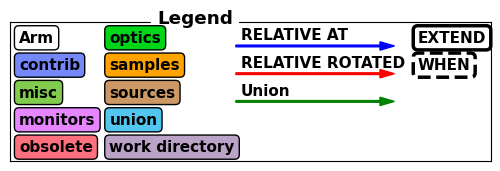
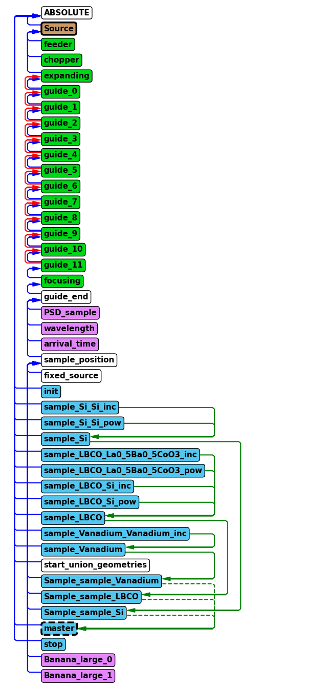
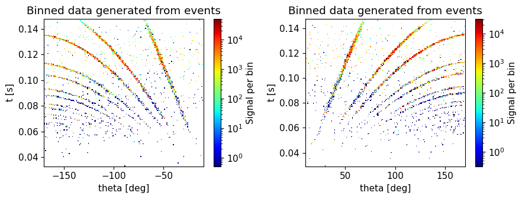
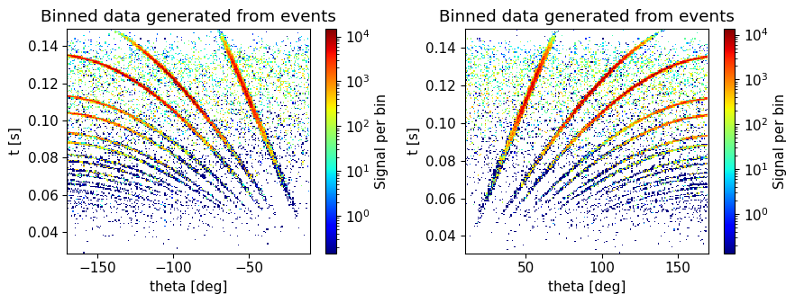
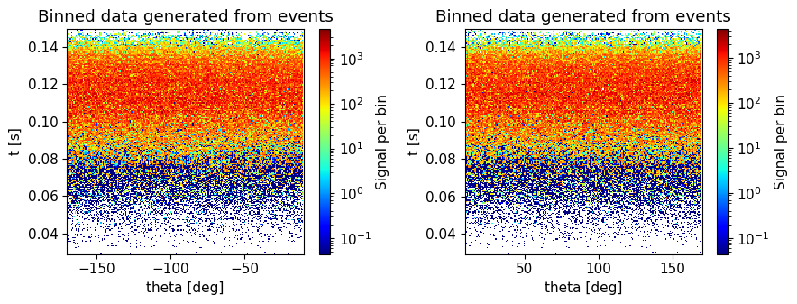
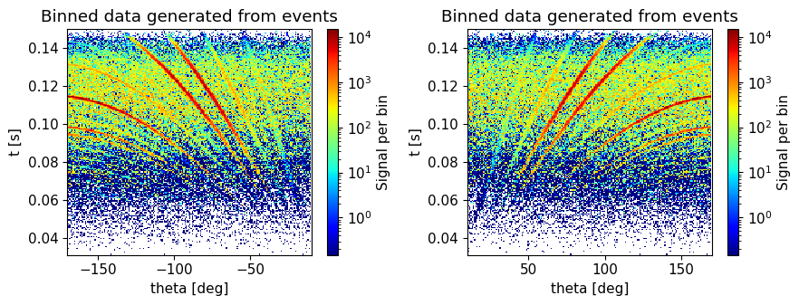

import mcstasscript as ms
import make_powder_instrument
from mcstasutils import plot
import quizlib
quiz = quizlib.Powder_Quiz()
Powder diffraction exercise#
Diffraction#
Diffraction instruments aim to measure the elastic scattering from the sample, meaning the neutron does not change energy. Since elastic scattering is much more probable than inelastic scattering, diffraction instruments typically assume all neutrons have the same energy before and after interacting with the sample. The elastic signal provides information on the crystal structure of the sample through Bragg’s law, \(n\lambda = 2d \text{sin}(\theta)\), where \(n\) is the scattering order, \(\lambda\) is the neutron wavelength, \(d\) is a distance between two planes of atoms in the sample and \(\theta\) is the scattering angle. There will be many different planes of atoms in a crystal, and by measuring the distance between many of these the crystal structure can be ascertained through analysis. Thus a diffractometer needs to measure scattering intensity as a function of neutron wavelength \(\lambda\) and scattering angle \(\theta\).
Powder diffraction#
This instrument is a powder diffractometer, meaning the measurements are performed on a powder containing all crystal orientations. For this reason there is no need to rotate the sample. It is however relevant to measure a large range of scattering angles, as several can be in the Bragg condition simultaneously.
This exercise#
In this notebook you will work with a McStas model of a simplified powder diffraction instrument. You will have to answer questions in the notebook by working with this model, both by running simulations and expanding the model. We will use the Python McStas API McStasScript to work with the instrument, you can find documentation here.
Get the instrument object#
First we need the McStas instrument object. Here it is retrieved from a local python function that generates it.
instrument = make_powder_instrument.make()
Investigate instrument#
The first task is to investigate the instrument object instrument using some of the available methods available on that object. Each method that show something about the instrument starts with the word show, so you can use tab to autocomplete in the cell to see the relevant methods.
In particular, look at what parameters are available and take a look at the instrument geometry.
Select sample size#
Select appropriate sample size given Vanadium has a macroscopic scattering cross section \(\Sigma\) of around 0.35 cm\(^{-1}\). A neutron beam with intensity \(I_0\) that travel in a media a distance of \(z\) will be attenuated as the neutrons scatter in the material, and the remaining intensity \(I\) can be calculated with the Beer-Lambert law:
For our experiment we want to observe neutrons that scattered once, as neutrons that scatter more than once would be considered background.
What sample depth would be appropriate?
A: 10 cm
B: 1 cm
C: 1 mm
import numpy as np
fraction_left = np.exp(-0.35*1.0) # 1 cm
fraction_scattered = 1 - fraction_left
print(f"scattering probability {100*fraction_scattered:.1f} %")
# Assume same distance before and after each scattering (rough approximation)
print(f"single scattering probability {100*fraction_scattered*fraction_left:.1f} %")
print(f"double scattering probability {100*fraction_scattered**2*fraction_left:.1f} %")
print(f"fraction of single scattering to multiple scattering {100*fraction_scattered*fraction_left/fraction_scattered:.1f} %")
scattering probability 29.5 %
single scattering probability 20.8 %
double scattering probability 6.1 %
fraction of single scattering to multiple scattering 70.5 %
quiz.question_1()
Work with instrument simulation#
Set sample size#
Use the set_parameters method on the instrument object to set the sample thickness, here using the parameter sample_radius. At first we will work with a narrow wavelength range of 2.5 - 2.501 Å, this should be specified using the l_min and l_max parameters.
# Test your instrument by giving it to the question_2 function
quiz.question_2(instrument)
Instrument settings#
Before running the simulation, a few settings pertaining to computing options need to be specified. This is done with a different method to clearly distinguish these from the instrument parameters. One important setting is called output_path which sets the name of the generated folder with simulation output.
instrument.settings(ncount=4.0e6, mpi=6, suppress_output=True, NeXus=True, output_path="first_run")
Run simulation#
Now the simulation can be executed with the backengine method. This method returns a list of data objects. Store this returned data in a python variable named data.
Visualize the data#
The data objects in the returned list can be plotted with the McStasScript function make_sub_plot.
Plot overview#
The function should plot three graphs:
PSD monitor#
Shows spatial distribution of intensity at the sample position.
Time of flight monitor#
Shows intensity as a function of neutron arrival time at the sample position.
Wavelength monitor#
Shows intensity as a function of neutron wavelength at the sample position. Since a tiny wavelength interval was used, this simulation is almost for a constant wavelength.
Time / wavelength resolution#
In order to analyze data from this instrument, the neutron energy is needed. On a pulsed source, this can be calculated from the arrival time of the neutrons and the known distance between the source and sample. Since the simulation was performed with a constant wavelength, the width of the time distribution can be used to deduce the uncertainty in the computed energy.
Whats the relative uncertainty on the time observed at the sample position, FWHM?
Insert value as a percentage.
quiz.question_3()
This will correspond to the wavelength resolution at this wavelength, generally we need less than 1% for powder diffraction, is this sufficient?
A: yes
B: no
quiz.question_4()
How could we improve this?
A: monochromator close to the sample
B: chopper close to the source
C: velocity selector close to the sample
D: shorter guide
quiz.question_5()
Improve the instrument#
In order to improve the performance of the instrument, we will add a McStas component. The first aspect to consider when doing so is where to place it, both in the component sequence and its physical location. We start by investigating where to put the component in the component sequence, as that needs to be specified when adding the component, and the physical location can be updated later.
McStas sequence#
Use either the show_diagram or show_components method on the instrument object to get an overview of the component sequence in the instrument.
Where would you place the new component? Keep in mind that the shielding around the source extends to a radius of 6 m, and it would not be possible to place it closer to the source than that distance.
A: before feeder guide section
B: after feeder guide section
C: before expanding guide section
D: after expanding guide section
quiz.question_6()
Which component#
Now we need to select what type of component to add to the instrument, here we will need the DiskChopper component.
Use the component_help method on the instrument object to learn more about this component.
instrument.component_help("DiskChopper")
___ Help DiskChopper _______________________________________________________________
|optional parameter|required parameter|default value|user specified value|
theta_0 = 0.0 [deg] // Angular width of the slits.
radius = 0.5 [m] // Radius of the disc
yheight [m] // Slit height (if = 0, equal to radius). Auto centering of beam at
half height.
nu [Hz] // Frequency of the Chopper, omega=2*PI*nu (algebraic sign defines the
direction of rotation)
nslit = 3.0 [1] // Number of slits, regularly arranged around the disk
jitter = 0.0 [s] // Jitter in the time phase
delay = 0.0 [s] // Time 'delay'
isfirst = 0.0 [0/1] // Set it to 1 for the first chopper position in a cw
source (it then spreads the neutron time distribution)
n_pulse = 1.0 [1] // Number of pulses (Only if isfirst)
abs_out = 1.0 [0/1] // Absorb neutrons hitting outside of chopper radius?
phase = 0.0 [deg] // Angular 'delay' (overrides delay)
xwidth = 0.0 [m] // Horizontal slit width opening at beam center
verbose = 0.0 [1] // Set to 1 to display Disk chopper configuration
-------------------------------------------------------------------------------------
Chopper calculations#
When adding a chopper, one needs to perform calculations to obtain the appropriate rotation frequency and phase. For this exercise, those calculations can be added to the instrument using a function included in the given Python file.
make_powder_instrument.add_chopper_calculations(instrument)
To see what variables are used in the instrument, one can use the show_variables method like below. This will include the ones added by the above function.
instrument.show_variables()
DECLARE VARIABLES
type variable name array length value
---------------------------------------------------
double min_time
double max_time
int sample_Si_active
int sample_LBCO_active
int sample_Vanadium_active
double chopper_position 6.5
double speed
double delay
USER VARIABLES (per neutron, only use in EXTEND)
type variable name array length value
---------------------------------------------------
double source_time
double n_scattering_sample
Adding chopper component and set parameters#
The add_component method on the instrument object is used to add the chopper component.
It is placed in the component sequence according to the correct answer in question 6 by using the after keyword argument.
The add_component method returns a component object, which is stored in a python variable.
The following parameters on the chopper component object are set:
yheight: 0.05 mradius: 0.35 mnslit: 1.0theta_0: 7.0 degdelay: To the variable calculated in the instrument (using quotation marks)nu: A calculation using thefrequency_multipliervariable, “frequency_multiplier*14.0”
chopper = instrument.add_component("chopper", "DiskChopper", after="feeder")
chopper.theta_0 = 7.0
chopper.nslit = 1
chopper.radius = 0.35
chopper.yheight = 0.05
chopper.nu = "frequency_multiplier*14.0"
chopper.delay = "delay" # Variable with calculated delay
Placing the component in space#
Next the physical location of the component is specified, this is done using the set_AT method on the component object.
This method takes a list of 3 numbers, corresponding to the x, y and z coordinates of the component. If just a single number is specified instead of a list, that is assumed to be the z coordinate.
One can also specify in what coordinate system one wants to work, which can be that of any preceding component.
The RELATIVE keyword is used to selecting the Source coordinate system.
The position of the chopper is needed for calculating the phase, so it is available as a variable in the instrument, which is used to set the z coordinate in the position. When the set_AT method is only given one value, it is assumed to be the z coordinate.
chopper.set_AT("chopper_position", RELATIVE="Source")
Verify new component#
Now that the chopper has been added to the instrument, let’s show the component sequence again to verify it was added correctly.
instrument.show_diagram()


The question below verifies the chopper was added correctly#
quiz.question_8(instrument)
Correct!
The DiskChopper was added at the right point in the space!
Run improved instrument#
Run the improved instrument with the parameter frequency_multiplier set to 3 and plot the data. The frequency_multiplier parameter controls the ratio of the frequency of the chopper and source, this should be a natural number to keep the two in sync.
Use the settings method to set a reasonable name for this simulation run.
Plot the data using the make_sub_plot function.
Whats the relative time uncertainty with this setup? Insert the answer as a percentage.
quiz.question_9()
Set parameters for run with Si sample#
Now we can run a simulation with a sample, set these parameters on the instrument object.
l_min: 0.5 Ål_max: 4.0 Åsample_choice: ‘“sample_Si”’ (Need single and double quotes to send a literal string to McStas)detector_height: 1.5 m
Again set a descriptive name using the output_path keyword argument in the settings method on the instrument object.
quiz.question_10(instrument)
Correct!
The parameters of the instrument were correctly set!
Now we are ready to run the simulation with the backengine method.
The resulting data list now contains event data from the large detector banks. This can be plotted in many ways, but to simplify this exercise a plot function is provided called plot.
plot(data)

Describe the data#
What do we see in the plots from event data?
A: Inelastic peaks
B: Magnetic scattering
C: Bragg peaks
quiz.question_11()
Producing final data sets#
Over the next days you will work with data from this simulation. These simulations need to be performed with a larger number of neutron rays to have sufficient information, and we thus recommend you use the settings below.
Be aware that if these simulations are repeated, new data folders will be created with an appended number. Tomorrow you will need to know which of these contain the data you wish to proceed with.
instrument.settings(ncount=4.0e7, mpi=6, suppress_output=True, NeXus=True)
Run reference sample: Si#
The first dataset use a simple Si sample.
instrument.set_parameters(sample_choice='"sample_Si"', frequency_multiplier=3, detector_height=1.5)
instrument.settings(output_path="output_sample_Si")
data_si = instrument.backengine()
plot(data_si, orders_of_mag=5)

Run calibration sample: Vanadium#
Next a simulation is performed with vanadium, this data will be used for normalization.
instrument.set_parameters(sample_choice='"sample_Vanadium"')
instrument.settings(output_path="output_sample_vanadium")
data_vanadium = instrument.backengine()
plot(data_vanadium, orders_of_mag=5)

Run main sample: LBCO#
The last simulation uses a more complex sample that will be more difficult to analyze.
instrument.set_parameters(sample_choice='"sample_LBCO"')
instrument.settings(output_path="output_sample_LBCO")
data_sample_lbco = instrument.backengine()
plot(data_sample_lbco, orders_of_mag=5)
